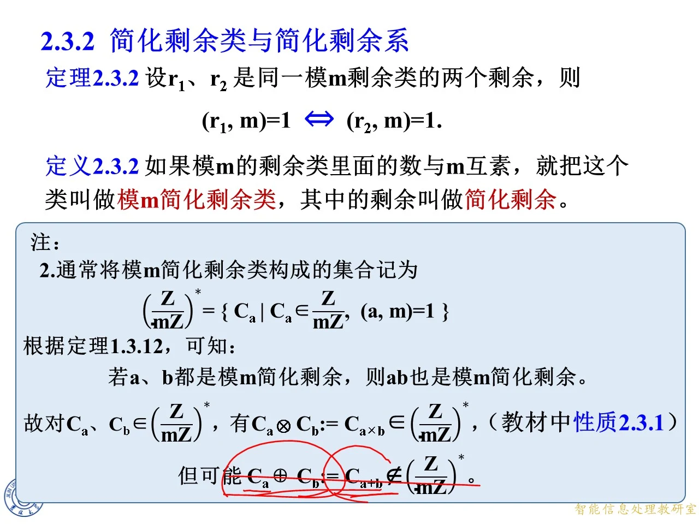

2.3.2 简化剩余类与简化剩余系
◆ p.163-168 ｜定理 2.3.2：同一剩余类的剩余与模的互素性一致
这一节要回答的问题是：在一个剩余类内部，"与 m 互素"这件事是不是类中每个数共有的性质？定理 2.3.2 给出肯定答案：设 r 1 r_1 r 1 r 2 r_2 r 2 m m m ( r 1 , m ) = 1 ⟺ ( r 2 , m ) = 1 (r_1,m)=1 \iff (r_2,m)=1 ( r 1 , m ) = 1 ⟺ ( r 2 , m ) = 1
证明思路（课件分两页动画展示）：由题设 r 1 ≡ r 2 ( m o d m ) r_1\equiv r_2\pmod m r 1 ≡ r 2 ( mod m ) r 1 = r 2 + k m r_1=r_2+km r 1 = r 2 + km k k k
r 1 − r 2 = k m ⟹ ( r 1 , m ) = ( r 2 + k m , m ) = ( r 2 , m ) , r_1-r_2=km \implies (r_1,m)=(r_2+km,m)=(r_2,m), r 1 − r 2 = km ⟹ ( r 1 , m ) = ( r 2 + km , m ) = ( r 2 , m ) ,
最后一步用了辗转相除法的基本恒等式 ( a + k m , m ) = ( a , m ) (a+km,m)=(a,m) ( a + km , m ) = ( a , m )
拓展 （课件外补充）：关键在于最大公约数在"加模的倍数"下不变，这与分数化简中"分子分母同加一个数会改变约分结果"完全不同。直觉上，r r r m m m r + k m r+km r + km m m m
◆ p.169-170 ｜定义 2.3.2：简化剩余类与简化剩余
有了定理 2.3.2，就可以放心地给"互素的类"起名字。
定义 2.3.2：如果模 m m m m m m m m m
注（课件原文）：定理 2.3.2 表明，对任一模 m m m m m m m m m
◆ p.171 ｜思考：模 6 的六个剩余类逐个检验
课件以模 6 为例，把六个剩余类全部列出来，逐类判断是否与 6 互素：
剩余类（列举）
mod 6 余数
与 6 互素？
… , − 12 , − 6 , 0 , 6 , 12 , … \ldots,-12,-6,0,6,12,\ldots … , − 12 , − 6 , 0 , 6 , 12 , … 0
否
… , − 11 , − 5 , 1 , 7 , 13 , … \ldots,-11,-5,1,7,13,\ldots … , − 11 , − 5 , 1 , 7 , 13 , … 1
是
… , − 10 , − 4 , 2 , 8 , 14 , … \ldots,-10,-4,2,8,14,\ldots … , − 10 , − 4 , 2 , 8 , 14 , … 2
否
… , − 9 , − 3 , 3 , 9 , 15 , … \ldots,-9,-3,3,9,15,\ldots … , − 9 , − 3 , 3 , 9 , 15 , … 3
否
… , − 8 , − 2 , 4 , 10 , 16 , … \ldots,-8,-2,4,10,16,\ldots … , − 8 , − 2 , 4 , 10 , 16 , … 4
否
… , − 7 , − 1 , 5 , 11 , 17 , … \ldots,-7,-1,5,11,17,\ldots … , − 7 , − 1 , 5 , 11 , 17 , … 5
是
结论：模 6 只有 2 个简化剩余类，即余 1 类和余 5 类。注意判断时不必看全部元素：余 1 类里挑代表 1，( 1 , 6 ) = 1 (1,6)=1 ( 1 , 6 ) = 1 ( 2 , 6 ) = 2 ≠ 1 (2,6)=2\ne 1 ( 2 , 6 ) = 2 = 1 − 5 -5 − 5 − 5 -5 − 5
◆ p.172-173 ｜例 4：模 6 的简化剩余类
例 4 把上面的思考用集合记号规范写出。模 6 的六个剩余类为
C i = { 6 k + i ∣ k ∈ Z } , i = 0 , 1 , … , 5 , C_i=\{6k+i\mid k\in\mathbb Z\},\quad i=0,1,\ldots,5, C i = { 6 k + i ∣ k ∈ Z } , i = 0 , 1 , … , 5 ,
即 C 0 = { … , − 12 , − 6 , 0 , 6 , 12 , … } C_0=\{\ldots,-12,-6,0,6,12,\ldots\} C 0 = { … , − 12 , − 6 , 0 , 6 , 12 , … } C 1 = { … , − 11 , − 5 , 1 , 7 , 13 , … } C_1=\{\ldots,-11,-5,1,7,13,\ldots\} C 1 = { … , − 11 , − 5 , 1 , 7 , 13 , … } C 2 = { … , − 10 , − 4 , 2 , 8 , 14 , … } C_2=\{\ldots,-10,-4,2,8,14,\ldots\} C 2 = { … , − 10 , − 4 , 2 , 8 , 14 , … } C 3 = { … , − 9 , − 3 , 3 , 9 , 15 , … } C_3=\{\ldots,-9,-3,3,9,15,\ldots\} C 3 = { … , − 9 , − 3 , 3 , 9 , 15 , … } C 4 = { … , − 8 , − 2 , 4 , 10 , 16 , … } C_4=\{\ldots,-8,-2,4,10,16,\ldots\} C 4 = { … , − 8 , − 2 , 4 , 10 , 16 , … } C 5 = { … , − 7 , − 1 , 5 , 11 , 17 , … } C_5=\{\ldots,-7,-1,5,11,17,\ldots\} C 5 = { … , − 7 , − 1 , 5 , 11 , 17 , … }
逐类检验：C 0 C_0 C 0 C 2 C_2 C 2 C 3 C_3 C 3 C 4 C_4 C 4 C 1 C_1 C 1 C 5 C_5 C 5 C 1 C_1 C 1 C 5 C_5 C 5 φ ( 6 ) = 2 \varphi(6)=2 φ ( 6 ) = 2
◆ p.174-176 ｜练习：模 5 有几个简化剩余类
练习：在模 5 的所有剩余类中，有几个简化剩余类？
解答：模 5 的五个剩余类按代表 0, 1, 2, 3, 4 列出为
{ … , − 10 , − 5 , 0 , 5 , 10 , … } , { … , − 9 , − 4 , 1 , 6 , 11 , … } , { … , − 8 , − 3 , 2 , 7 , 12 , … } , \{\ldots,-10,-5,0,5,10,\ldots\},\ \{\ldots,-9,-4,1,6,11,\ldots\},\ \{\ldots,-8,-3,2,7,12,\ldots\}, { … , − 10 , − 5 , 0 , 5 , 10 , … } , { … , − 9 , − 4 , 1 , 6 , 11 , … } , { … , − 8 , − 3 , 2 , 7 , 12 , … } , { … , − 7 , − 2 , 3 , 8 , 13 , … } , { … , − 6 , − 1 , 4 , 9 , 14 , … } . \{\ldots,-7,-2,3,8,13,\ldots\},\ \{\ldots,-6,-1,4,9,14,\ldots\}. { … , − 7 , − 2 , 3 , 8 , 13 , … } , { … , − 6 , − 1 , 4 , 9 , 14 , … } .
由于 5 是素数，1 , 2 , 3 , 4 1,2,3,4 1 , 2 , 3 , 4 φ ( 5 ) = 4 \varphi(5)=4 φ ( 5 ) = 4 p p p p − 1 p-1 p − 1
◆ p.177-178 ｜思考：模 m 一般有几个简化剩余类
思考：在模 m m m m m m C 0 = { … , 0 , … } , C 1 = { … , 1 , … } , … , C m − 1 = { … , m − 1 , … } C_0=\{\ldots,0,\ldots\},C_1=\{\ldots,1,\ldots\},\ldots,C_{m-1}=\{\ldots,m-1,\ldots\} C 0 = { … , 0 , … } , C 1 = { … , 1 , … } , … , C m − 1 = { … , m − 1 , … }
推理：每个剩余类用它对 0 , 1 , … , m − 1 0,1,\ldots,m-1 0 , 1 , … , m − 1 0 , 1 , … , m − 1 0,1,\ldots,m-1 0 , 1 , … , m − 1 m m m φ ( m ) \varphi(m) φ ( m )
◆ p.179-180 ｜思考的答案
课件随后给出答案：模 m m m φ ( m ) \varphi(m) φ ( m ) m m m φ ( m ) \varphi(m) φ ( m ) a a a φ ( m ) \varphi(m) φ ( m )
◆ p.181 ｜注 2：简化剩余类集合的记号
注 2 引入标准记号：通常将模 m m m
( Z m Z ) ∗ = { C a ∣ C a ∈ Z m Z , ( a , m ) = 1 } . \left(\frac{\mathbb Z}{m\mathbb Z}\right)^{*}=\{C_a\mid C_a\in\frac{\mathbb Z}{m\mathbb Z},\ (a,m)=1\}. ( m Z Z ) ∗ = { C a ∣ C a ∈ m Z Z , ( a , m ) = 1 } .
读法：Z m Z \frac{\mathbb Z}{m\mathbb Z} m Z Z m m m ∗ * ∗ m m m m = p m=p m = p
F p ∗ = ( Z p Z ) ∗ = { C 1 , … , C p − 1 } = F p ∖ { C 0 } , F_p^*=\left(\frac{\mathbb Z}{p\mathbb Z}\right)^{*}=\{C_1,\ldots,C_{p-1}\}=F_p\setminus\{C_0\}, F p ∗ = ( p Z Z ) ∗ = { C 1 , … , C p − 1 } = F p ∖ { C 0 } ,
即素数情形下简化剩余类集合就是"去掉零类"之后的全部剩余类。这个星号记号在抽象代数与密码学文献中极常见（如 Z n ∗ \mathbb Z_n^* Z n ∗ Q R n ⊂ Z n ∗ QR_n\subset\mathbb Z_n^* Q R n ⊂ Z n ∗
◆ p.182-183 ｜简化剩余的乘法封闭性（教材性质 2.3.1）
这一页用两个旧定理搭出新性质。
定理 1.3.11：设 a , b , c a,b,c a , b , c b ≠ 0 b\ne 0 b = 0 c ≠ 0 c\ne 0 c = 0 ( a , c ) = 1 (a,c)=1 ( a , c ) = 1 ( a b , c ) = ( b , c ) (ab,c)=(b,c) ( ab , c ) = ( b , c ) a a a c c c a b ab ab c c c b b b
例 16：设 a , b , c a,b,c a , b , c ( a , c ) = 1 (a,c)=1 ( a , c ) = 1 ( b , c ) = 1 (b,c)=1 ( b , c ) = 1 ( a b , c ) = 1 (ab,c)=1 ( ab , c ) = 1 ( a b , c ) = ( b , c ) = 1 (ab,c)=(b,c)=1 ( ab , c ) = ( b , c ) = 1
定理 1.3.12：设 a 1 , a 2 , … , a n , c a_1,a_2,\ldots,a_n,c a 1 , a 2 , … , a n , c ( a i , c ) = 1 (a_i,c)=1 ( a i , c ) = 1 1 ≤ i ≤ n 1\le i\le n 1 ≤ i ≤ n ( a 1 a 2 ⋯ a n , c ) = 1 (a_1a_2\cdots a_n,c)=1 ( a 1 a 2 ⋯ a n , c ) = 1
根据定理 1.3.12 可知：若 a a a b b b m m m a b ab ab m m m C a , C b ∈ ( Z m Z ) ∗ C_a,C_b\in\left(\frac{\mathbb Z}{m\mathbb Z}\right)^{*} C a , C b ∈ ( m Z Z ) ∗ C a ⊗ C b : = C a × b ∈ ( Z m Z ) ∗ C_a\otimes C_b:=C_{a\times b}\in\left(\frac{\mathbb Z}{m\mathbb Z}\right)^{*} C a ⊗ C b := C a × b ∈ ( m Z Z ) ∗ C a ⊕ C b : = C a + b C_a\oplus C_b:=C_{a+b} C a ⊕ C b := C a + b ( Z m Z ) ∗ \left(\frac{\mathbb Z}{m\mathbb Z}\right)^{*} ( m Z Z ) ∗ C 1 ⊕ C 5 = C 0 C_1\oplus C_5=C_0 C 1 ⊕ C 5 = C 0
拓展 （课件外补充）：这条"乘法封闭、加法不封闭"正是集合记号带星号的原因——( Z m Z ) ∗ \left(\frac{\mathbb Z}{m\mathbb Z}\right)^{*} ( m Z Z ) ∗ F p ∗ F_p^* F p ∗ p − 1 p-1 p − 1

课件原图 · 9月18日授课 · 第 183 页 查看前后已收录原页 →